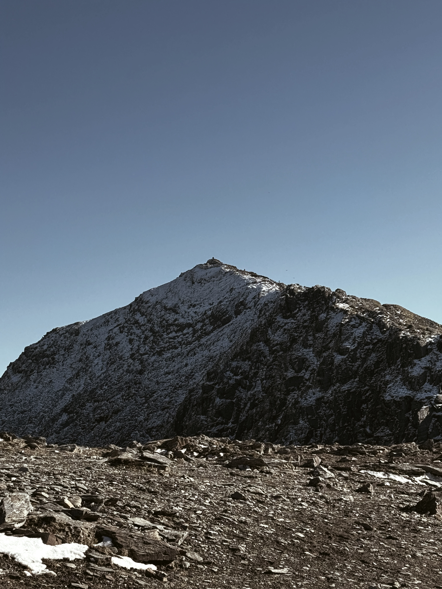

🌄 Freedom in the Heights: Climbing in Snowdonia
Selen KarakayaSnowdonia is a mountainous region in North Wales, home to the highest peak in Wales, Mount Snowdon (Yr Wyddfa), which stands at 1,085 meters (3,560 ft). It's part of Snowdonia National Park, one of the most beautiful and popular outdoor destinations in the UK. The area is known for its stunning landscapes, scenic hiking trails, lakes, waterfalls, and charming villages. It's a favorite spot for nature lovers, hikers, and adventure seekers.
Snowdonia
Climbing in Snowdonia is more than just reaching a summit — it's a journey through raw beauty and freedom. With every step, you breathe in crisp mountain air and leave behind the noise of everyday life. The views from the ridges stretch endlessly, and standing on top of Snowdon makes you feel powerful, peaceful, and profoundly alive. It’s where your legs may ache, but your soul feels light — free, connected, and truly present.